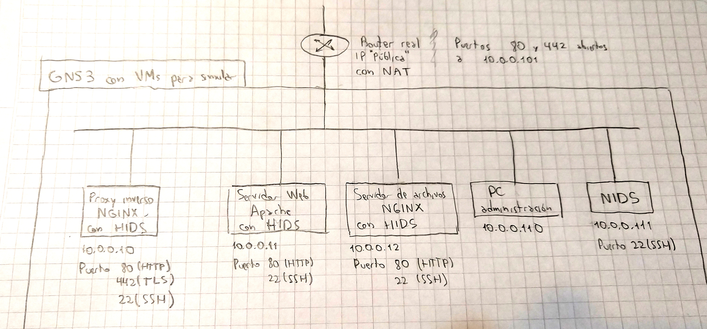

Implementación de un grupo de servidores para una empresa, que consista de diferentes servidores ubicados en diferentes máquinas
Este es el diagrama de red que vamos a implementar en un principio. Para hacer fácil las simulaciones vamos a intentar hacer todo dentro de GNS3 usando máquinas virtuales.
Es una simulación de la red de una empresa pequeña, entonces usaríamos un router común, que tenga NAT y una "IP pública". Ese router tendría abiertos los puertos 80 y 442 que apunten al proxy inverso. A diferencia del router, las máquinas van a ser virtuales y van a estar todas en la misma red. Los dos servidores web se acceden a través del proxy inverso. Eso es lo que tenemos pensado hacer relativo a los servicios web, que es lo primero que vamos a implementar, después tenemos pensado implementar HIDS y NIDS. En principio pensamos usar como HIDS a fail2ban, entonces dentro de cada servidor debería haber un fail2ban que monitoree los logs y que notifique al administrador cuando haya algo sospechoso. Por lo menos queremos detectar cuando alguien está haciendo algún tipo de escaneo en el sitio web. Si vemos que vale la pena podríamos usar a OSSEC que parece más completo en lugar de fail2ban. En una máquina aparte habría un NIDS como por ejemplo Snort que snifee la red también buscando algo sospechoso para notificar al administrador. No estamos seguros todavía de hasta donde llegar con lo de HIDS y NIDS, porque primero tenemos que investigar de qué se tratan, en qué ayudan, y si tiene sentido implementarlos en una red como la propuesta.